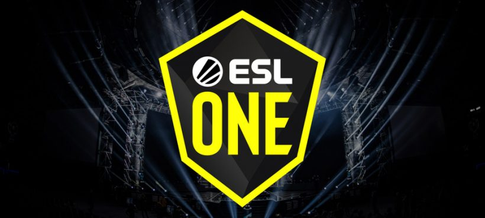

CSGO RushB中文网
CSGO RushB中文网
本文转自CSGO官博
2020/9/10更新：ESL：CSGO Major大赛里约热内卢2020取消：点击查看
2020/4/17更新：Major地区积分赛已更新，访问此页面来获取最新信息：Major地区积分赛.
2020/4/8更新：由于C0ntact战队划分回欧洲地区，各地区的邀请名额已经更新。

里约Major将会在十一月份举办，并且作为2020年唯一的Major，奖金池将会有2,000,000美元。
这将会使两届Major之间的间隔超过一年。为保证里约Major邀请到的是世界上最顶尖的战队，我们会要求现在的传奇组和挑战者组展示出它们仍在头部梯队的状态。考虑到未来可以预见的交通困难，我们会分地区地来推进这件事。
Major地区积分赛
所有将要参与十一月里约Major的战队需要通过地区积分赛来获得邀请资格，邀请名单会根据各个战队在即将到来的Major地区积分赛的表现进行更新。
参与地区积分赛的战队会根据他们的排名获得Major排位积分。当我们获得里约Major举办前所有地区积分赛的最终清单后，我们会公布积分分配的详细内容。
首个Major地区积分赛将会在五月举办，并且我们准备在秋季额外举办一个Major地区积分赛系列。此外，如果比赛主办方有兴趣将他们先前计划的2020年赛事修改为Major地区积分赛，则应与我们取得联系。
我们觉得Major积分赛必须邀请到该地区的顶级战队，并为其他战队举办资格赛。赛事可以采取任何形式，任何奖金池，任何持续时间，线上线下任意或两者兼备。
十一月里约邀请赛
6个不同地区会通过各自的Major地区积分赛，总共推选出24支战队受邀参加十一月里约Major。
总计有8支传奇组战队、8支挑战组战队和8支竞争组战队邀请名额可用。
每个地区将会基于上一届Major中该地区的表现获得邀请名额分配。通过2019柏林Major的结果，各地区获得以下邀请名额：
| 十一月里约邀请名额分配 | ||||||
|---|---|---|---|---|---|---|
| 欧洲 | 独联体 | 北美 | 南美 | 亚洲 | 大洋洲 | |
| 传奇组 | 3 | 2 | 3* | 0 | 0 | 0 |
| 挑战者组 (前回归挑战者组) |
6 | 1 | 1 | 0 | 0 | 0 |
| 竞争者组 (前新挑战者组) |
2 | 2 | 1 | 1 | 1 | 1 |
| 总邀请名额 | 11 | 5 | 5 | 1 | 1 | 1 |
*无法回到本土地区的战队会受邀参与所在地区的Major积分赛来捍卫他们的邀请名额。
2020年五月Major地区积分赛系列
Major地区积分赛中首个系列赛将会在五月由ESL来举办。 所有本来受邀参与五月里约Major和五月里约Minors的战队将会被邀请竞争各自的地区排名。当前的传奇组战队和挑战者组战队将会在开赛时就获得一些Major地区积分赛的积分。
FAQ
Q. Major地区积分赛如何被计算？
- Major地区积分赛将会基于积分进行统计，越靠近Major举办的赛事价值将会越高。然而，我们在没有完成全年的Major地区积分赛前，不会有详细的点数比例。
Q. 十一月的里约Major前还会有Minors吗？
- 不会。Major地区积分赛将会用于决出所有24支参与十一月里约Major的战队。战队没有其他方法获取资格。
Q. 受邀参与五月Minors的战队会发生什么？
- 对于五月举办的Major地区积分赛，有资格参与五月Minors（且/或 是Minors预选的）的战队将会被邀请参与他们的各自地区的Major积分赛。对于之后的Major地区积分赛，将会根据地区排名邀请战队，以及为通过预选赛的战队提供额外名额。
Q. Minor奖金池会发生什么？
- Valve会赞助五月和秋季Major地区积分赛。每个赛事的总奖池为255,000美元，并基于该地区的传奇组和挑战者组邀请名额进行划分。最小的地区奖金池将会是10,000美元。
Q. 战队参与哪个地区的Major积分赛由什么决定？
- 当前情况下，战队的参赛区域由他们当前的所在地决定。
Q. 如果一个战队更换了地区会发什么什么？
- Major地区积分赛之反映了一个战队在该地区同其他战队的相对表现。因此，任何由战队引起的更换地区将会导致该战队的Major排位积分重置。
Q. 战队能改变他们的参赛成员吗？
- 战队在赛事开始前最多可以更换两名成员，每位成员的变动会消耗20%的战队积分。他们可以在每个Major地区积分赛的参赛名单锁定前进行调整。